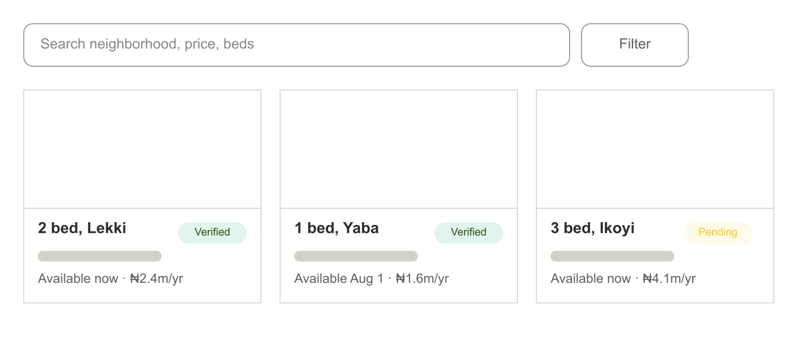
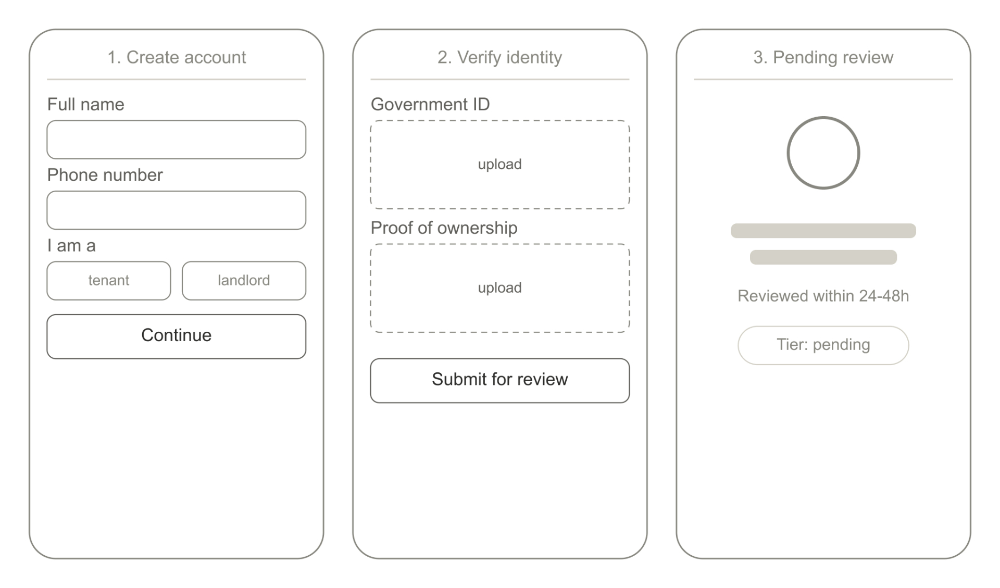
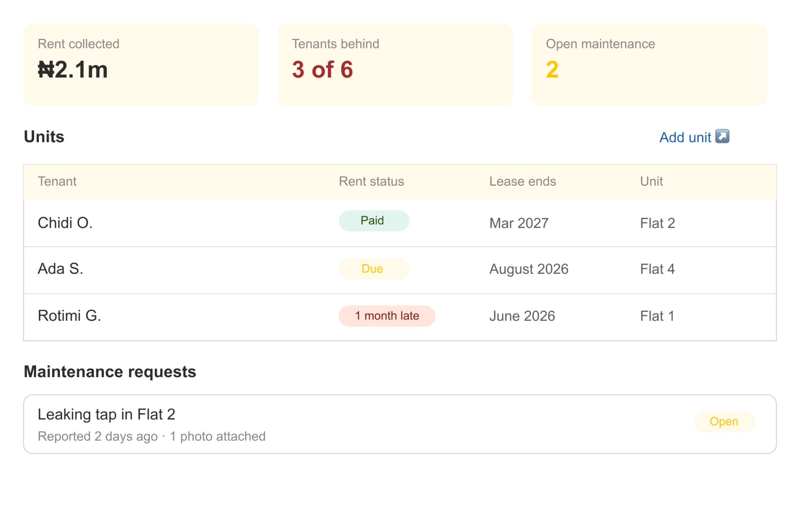
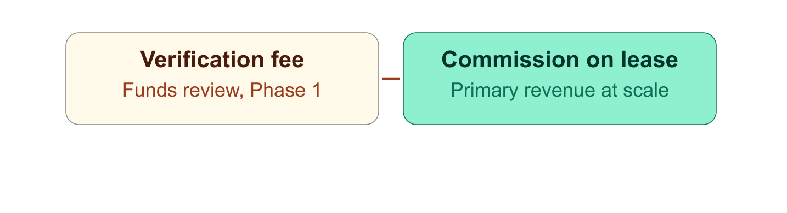

Why finding, leasing, and managing rental property is still manual, and solution paths to improve trust and address data gaps in the renting process.
The global rental process is fragmented; finding, securing, and managing a rental property remains difficult. There are unverified listings, communication gaps, and cash payment issues. This teardown identifies the trust, communication, and data failures with the current system and contains suggested solutions to improve the rental process in Nigeria.
There's practically no formal infrastructure managing the rental process in Nigeria. Renters discover properties through unregulated agents, Facebook groups, WhatsApp messages, and Twitter posts. Rental agreements are sometimes handwritten Word documents, hastily prepared and signed. Deposit and payment disputes have no formal resolution process. Every online listing could be fake, already rented, or nothing like its description, and there's no way to know until a viewing fee is paid.
How do you build enough trust between strangers (a tenant, an agent, and a landlord), who've never met, that they're willing to enter into a financial agreement sight unseen and sustain that relationship digitally for the length of the tenancy?
Ghost listings account for a large number of listings on informal channels in Lagos and Nairobi. LASRERA found that nearly 18% of documents submitted for verification turn out to be forged, and ghost/fake listings are independently described as the most widespread scam type in the market.
Tenants spend significant money viewing houses that don't match their described preference, and pay repeated viewing fees across multiple agents for properties that turned out to be already rented or nothing like the listing.
Different agents show the same houses tenants have seen before, leading to wasted time and money.
Some listings are unverified and not directly managed by the agent featuring them; agents advertise units they don't control to generate leads.
A ten-year analysis of over $20B in rent payments found that renters paying offline are 23% more likely to pay late than those paying digitally.
Landlords report no structured management system, maintenance and communication is tracked via personal phone.
Agents without proper digital workflows end up managing 20+ listings via WhatsApp, photos, and memory.
There's no proper rental history data for tenants or landlords, so every tenancy starts from zero trust.
She needs a verified, furnished apartment within two months.
Pain point: Every listing requires a viewing fee before she can confirm it's real; some listings don't exist, some don't match her stated requirements, and others are already rented.
Core need: Verified listings with live availability, remote viewing, and a safe way to pay a holding deposit before she arrives.
Self-manages all apartments. Rent collection over WhatsApp, maintenance tracked on a notepad, tenant screening by gut feeling.
Pain point: When some of his tenants fall behind on rent in the same month, he has no formal escalation path and no record of prior communication to fall back on.
Core need: A single dashboard for rent collection with automated reminders, a maintenance tracker with photo evidence, and structured tenant screening.
Anyone can post anything. There is no gatekeeping layer between a claim of ownership and a live public listing.
Portals are paid for listings and leads, not sustained tenancies and nothing in the model rewards keeping data accurate.
Dispute resolution requires court access most tenants cannot afford, so bad actors face no consequence.
A marketplace platform that solves the trust gap between tenants and property owners through verified supply with real listings, structured digital tenancy management, AI-powered listing fraud detection, smart tenant-property matching, predictive maintenance, and automated dispute evidence collection.

Every listing requires agent or landlord ID verification, property ownership documentation, a signed platform conduct agreement, and shows a visible verification tier.
Digital lease generation, OTP e-signature, recurring rent collection with automated reminders, maintenance requests with photo upload, and a full on-platform communication log.
Tenants build a RentScore over time: on-time payment, lease completion, maintenance behaviour, verified landlord reviews. Landlords build a parallel profile. Strong scores unlock faster processing and reduced deposits.
A matching engine that learns from preferences, browsing behaviour, and successful past tenancies to surface the right property at the right time, without 20 manual filters.
An AI model trained on property age, type, location, and maintenance history predicts when systems are likely to need attention, prompting landlords to schedule preventive inspections.
Because every interaction lives on the platform, disputes have a paper trail, which is better than scrolling on WhatsApp. This gives escalation a proper structure and precedent.

If I were to ship this, I'd sequence it in three phases rather than launching all Must-have features simultaneously. I would launch with human-verified listings in the first three months, and treat the AI model as V2 once there's enough verified/rejected listing history to train on. This is the trade-off I'm least certain about: if verification volume grows faster than expected, human review becomes the bottleneck sooner than I've planned for.
I would also cut AI-powered property matching and predictive maintenance from V1 for the same reason, they both need behavioural or historical data the platform won't have on day one. And I excluded mortgage integration and investment analytics entirely: they serve an institutional buyer, not the renter or small landlord this version is built for, and including them would dilute focus on the core trust problem.
What would make V1: human-verified listings (ID, ownership documentation, signed conduct agreement, visible verification tier), end-to-end digital lease generation with OTP e-signature, recurring rent collection with automated reminders, maintenance request tracking with photo upload, and a full on-platform communication log.
RentScore and landlord reputation profiles are valuable but should-haves; they only become meaningful once there's repeat usage data, so they follow shortly after launch. I would build them in phase 3, typically in the 6th – 12th month.

Primary: urban renters 22 – 45 in high-mobility cities: Lagos, Nairobi, Accra, Johannesburg to start.
Secondary: landlords managing 2 or more units, currently self-managing via WhatsApp and Telegram.
Tertiary: estate agents seeking a verified listing pipeline and digital workflow.
Agent referral programme: tiered commission on bringing in 10+ verified listings.
Employer relocation partnerships: HR teams at large companies refer relocating hires.
Social content targeting tenant anxiety: 'how to verify a listing', 'landlord red flags', 'protect your deposit'.
A phased revenue model: a verification fee funds the review layer in phase 1, and commission on completed leases becomes the primary revenue engine at scale.

Verified listing rates, to determine supply quality; measured by verification pipeline completion.
Tenant-to-lease conversion rate, to determine demand activation.
Rent on-time rate, to determine platform reliability; measured by payment timestamps vs due date.
Deposit dispute rate, as a trust signal; measured by disputes filed / total deposits held.
Ghost listing rate, to determine supply quality; measured by user reports plus re-verification audits.
Ten thousand unverified listings is worth less than five hundred verified ones. In marketplaces, supply quality determines whether demand ever returns. Validate willingness-to-pay for verification first, reputation only matters after the verification layer proves demand.
Verification systems, reputation profiles, and dispute pathways require time, legal review, and partner relationships that a feature sprint can't compress.
A documented communication log and public reviews reduce the informal leverage landlords hold in disputes. I'd expect pushback on reputation visibility and would roll it out by first proving landlord value (fewer late payments, faster qualified tenants) before asking for more transparency.